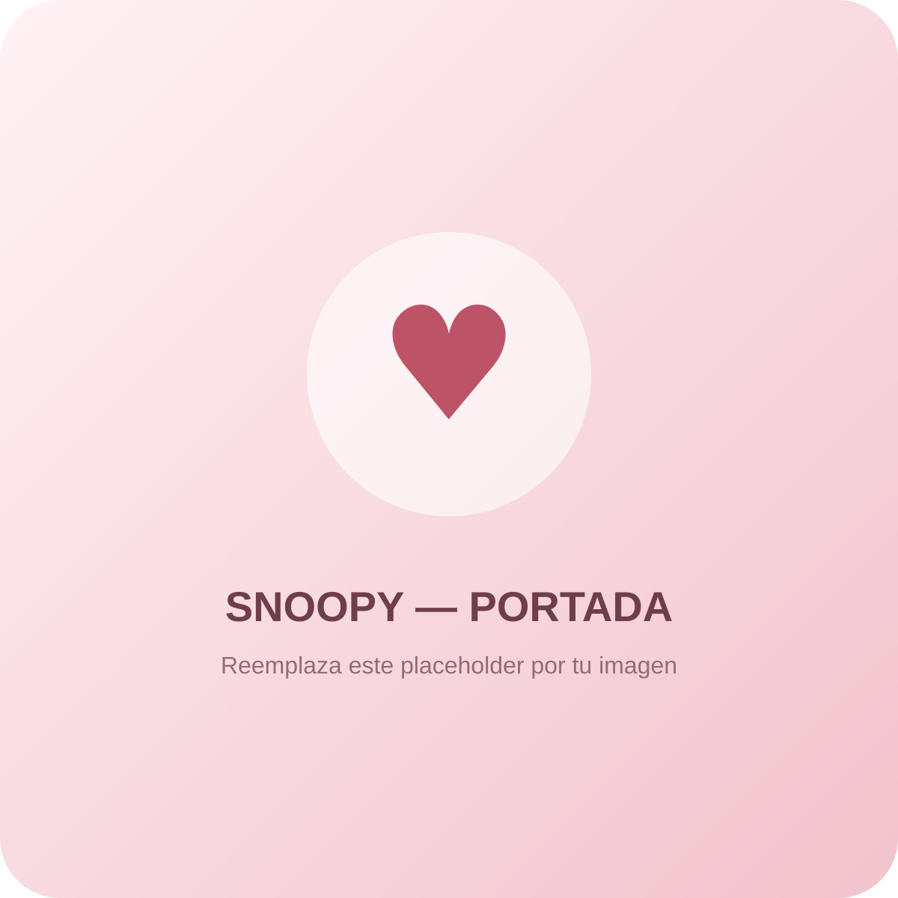
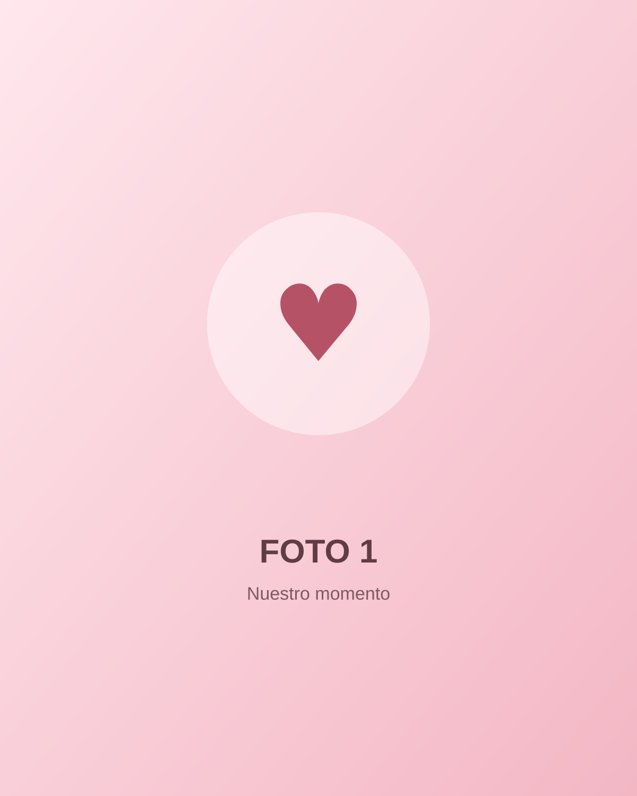
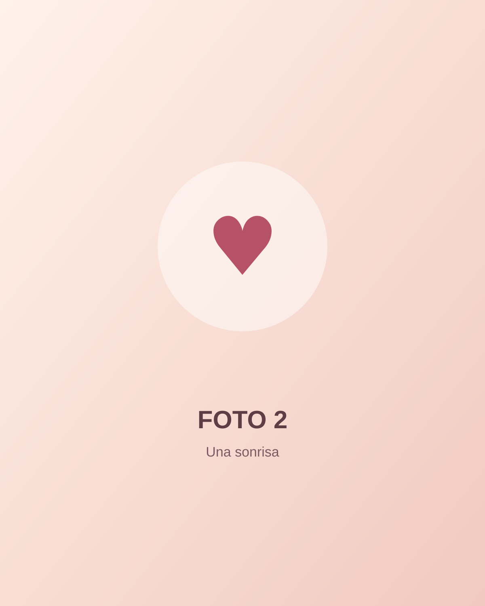
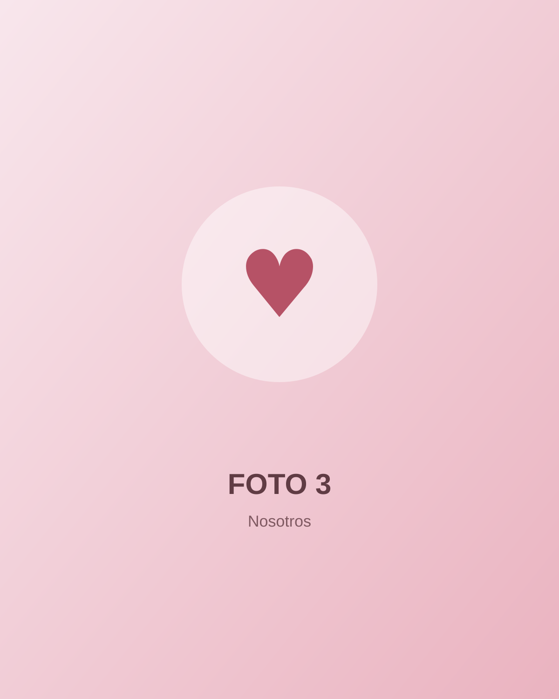
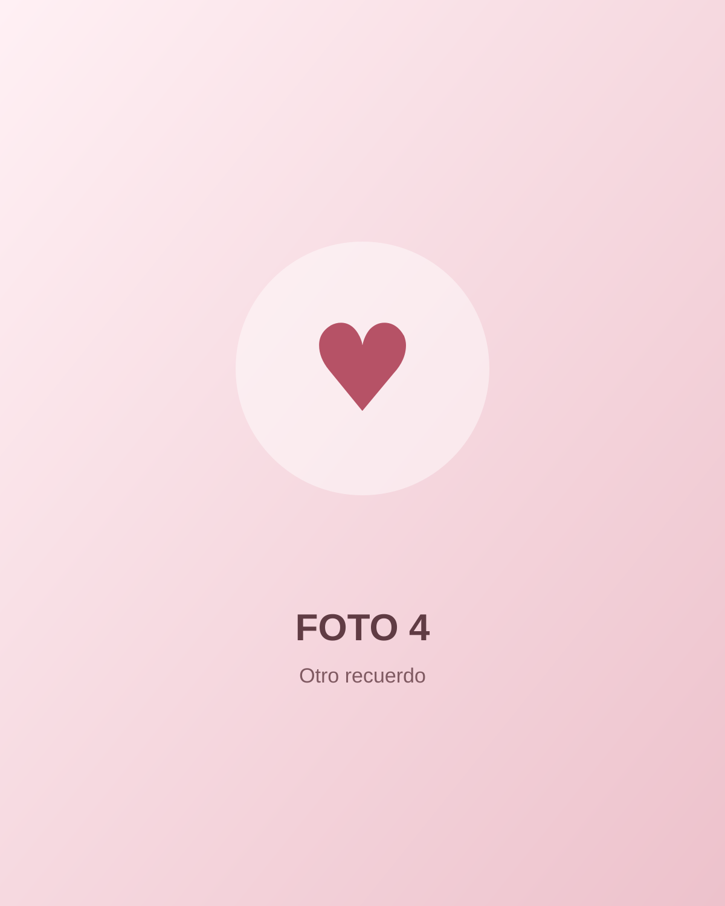
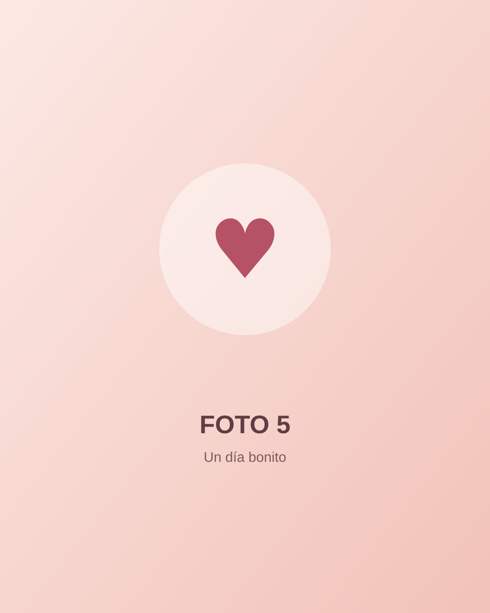
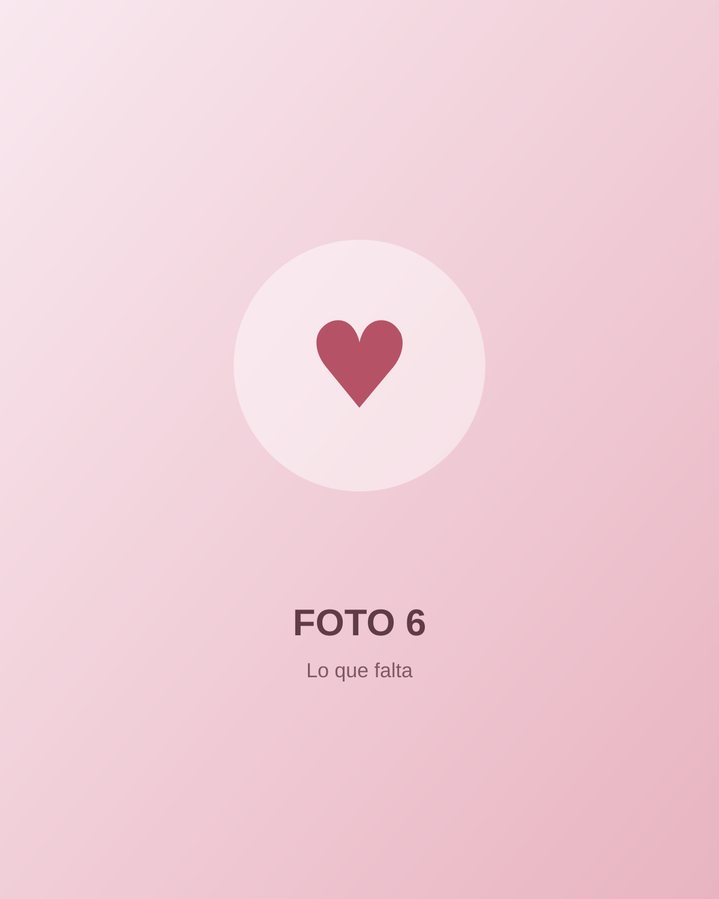
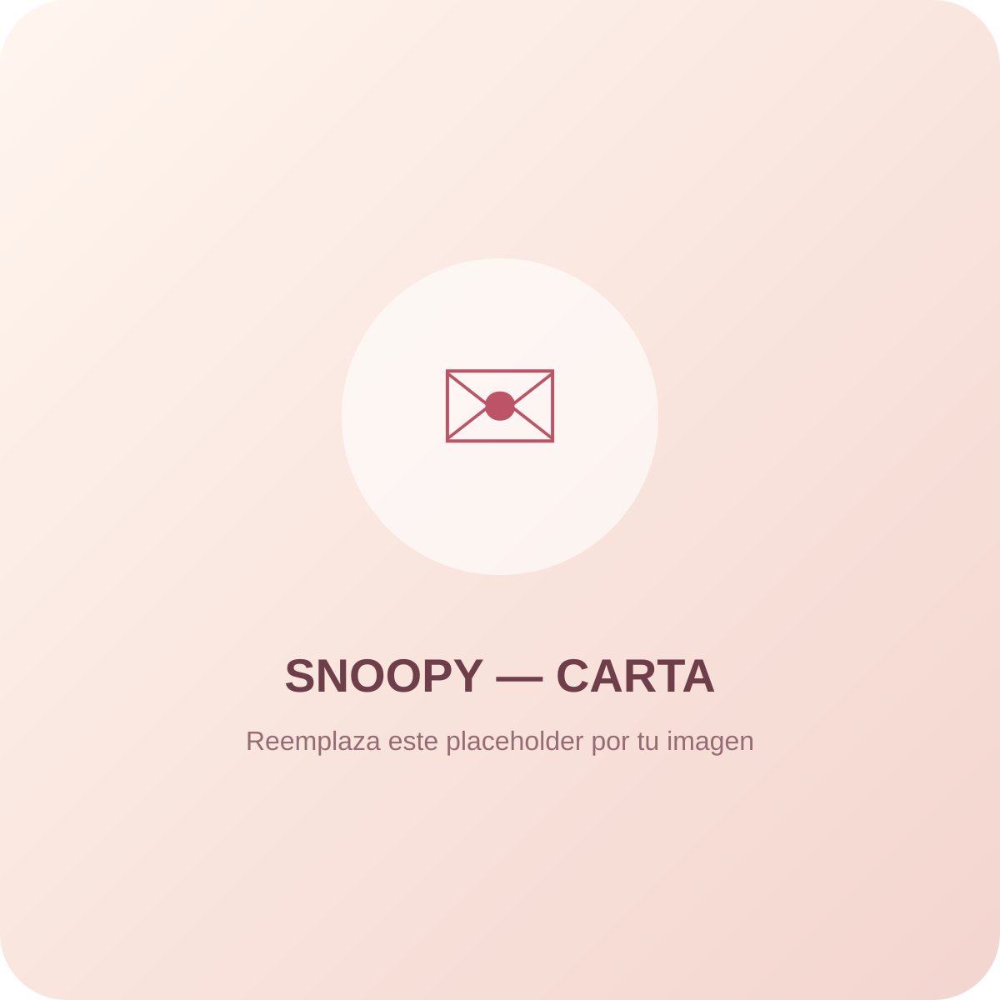
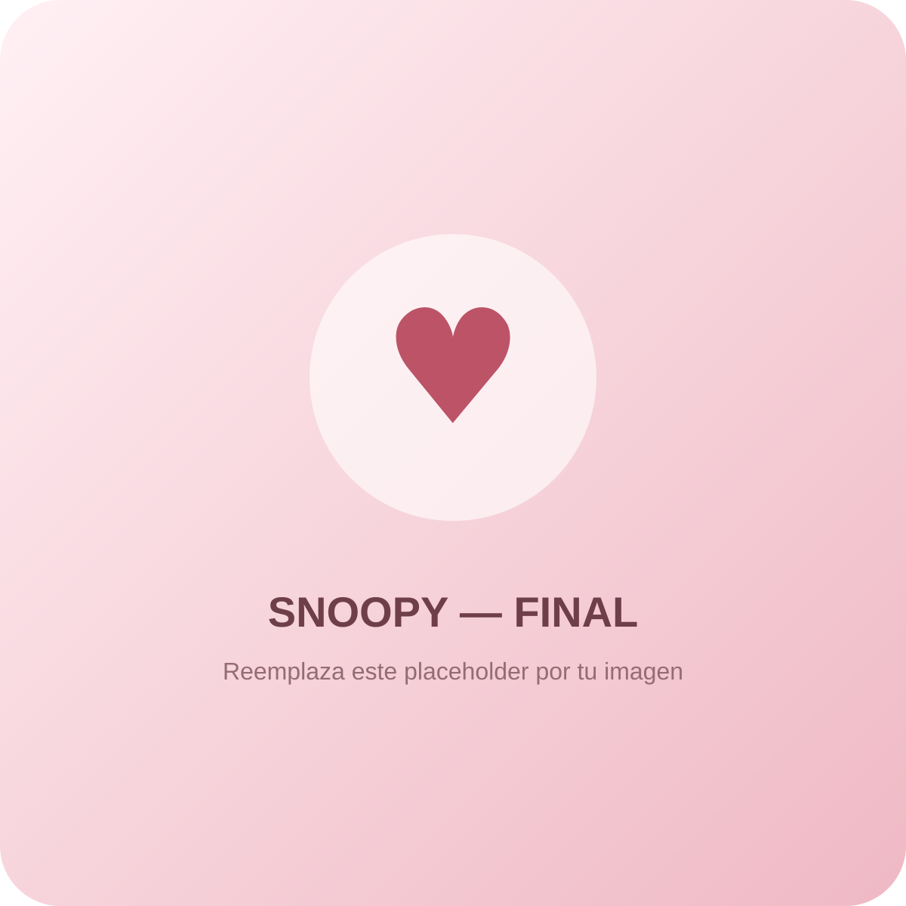

Capítulo 01
Cuando todo comenzó
Entre millones de coincidencias, apareciste tú. Y poco a poco te convertiste en una de mis personas favoritas.
Una pequeña sorpresa preparada con amor
Hay cosas que se dicen con palabras… y otras que merecen un lugar entero.
De Cristhofer, para ti ✨
Cristhofer & Nicole
Hice esta página solo para ti, para guardar un pedacito de lo que siento y recordarte que hasta los días más simples se vuelven especiales cuando estás tú.

“Tú haces bonito mi mundo.”
para Nicole ♡Nuestra historia
Cambia la fecha en js/app.js y el contador calculará automáticamente cuánto tiempo llevan juntos.
Entre millones de coincidencias, apareciste tú. Y poco a poco te convertiste en una de mis personas favoritas.
Las conversaciones, las risas, los detalles inesperados y esos instantes que parecen normales, pero que contigo se sienten distintos.
Esta no es una página para mirar hacia atrás solamente. También es una promesa de todas las fotografías, lugares y aventuras que todavía nos faltan.
Si me preguntaran cuál es mi lugar favorito, no diría una ciudad ni un paisaje. Diría cualquier lugar en el que estés tú.
— Cristhofer
Un pedacito de nosotros
Reemplaza estas imágenes por sus fotos manteniendo los mismos nombres, o cambia las rutas directamente en index.html.






Podría escribir cien
Tu sonrisa y la forma en que cambia por completo cualquier momento.
La manera tan tuya de hacerme reír cuando menos lo espero.
Tu forma de mirarme y hacerme sentir que estoy exactamente donde quiero estar.
Las conversaciones que empiezan con cualquier cosa y terminan significándolo todo.
Tu personalidad, incluso en esos detalles que quizás tú ni siquiera notas.
La tranquilidad que siento cuando sé que estás conmigo.
Nuestros chistes, ocurrencias y momentos que solo nosotros entendemos.
La manera en que haces que quiera vivir más experiencias a tu lado.
Todos los recuerdos que ya tenemos y que no cambiaría por nada.
Y, sobre todo, porque eres tú, Nicole. No necesito una razón mejor que esa. ♥

Hay algo que quiero decirte
Guardé aquí unas palabras que quería decirte de una manera diferente.
Nuestra canción
Coloca tu canción como assets/music/nuestra-cancion.mp3 y se reproducirá desde este botón.

Una última pregunta…